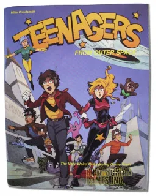

Teenagers from Outer Space (often abbreviated TFOS) is a rules-light comedy role-playing game written by Michael A. Pondsmith and published by R. Talsorian Games. It was inspired by gag anime such as Urusei Yatsura and Ranma ½. The game was first released in 1987, when anime was still mostly an underground sensation. The game is currently in its third edition, published in 1997. This edition was retooled to play up the anime inspirations after anime had become more mainstream.
The basic setting of Teenagers from Outer Space revolves around aliens making contact with Earth and becoming infatuated with Earth's "teen culture". So much, in fact, that many aliens move to Earth, and enroll their children in Earth schools. This set the stage for a variety of comedic situations.